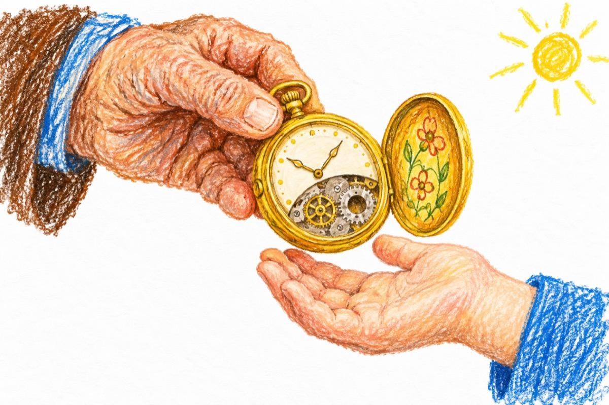

Ceasul de aur
Mi-a dat cineva un ceas
Tot din aur și gravat
De la străbunici rămas -
Că-mi era îndatorat.
Ceasul n-a mers niciodată
Și nici n-a fost nevoit,
Cică îi lipsea o roată
Și de-aceea n-a pornit.
Un bătrân m-a învățat
Nu de ceas este nevoie,
Ci de auru-adunat
Și să-l vând nu este voie.
Și așa l-am tot ținut
Fără vâlvă, fără știre
Și când nu am mai putut -
L-am lăsat ca moștenire!
Nepotul l-a dat pe ceas
Tot din aur și gravat
Cu nimic n-a mai rămas -
Că era îndatorat!
Și-astăzi, ceasul tot nu merge
Și-i din aur și gravat
De ce-i bun se înțelege -
Nu te lăsa-ndatorat!...
Vasile Groza